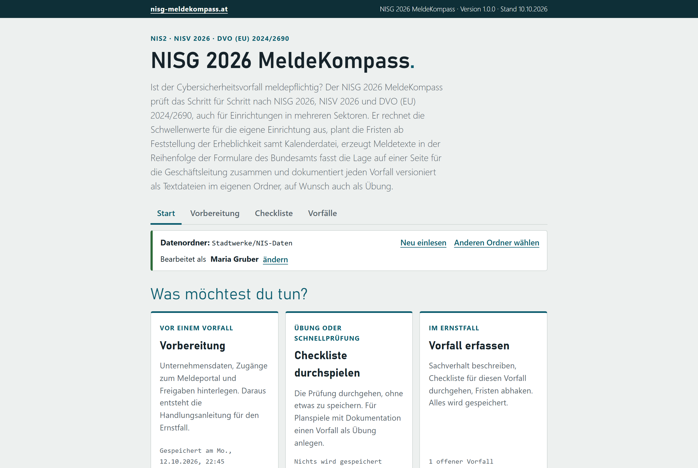
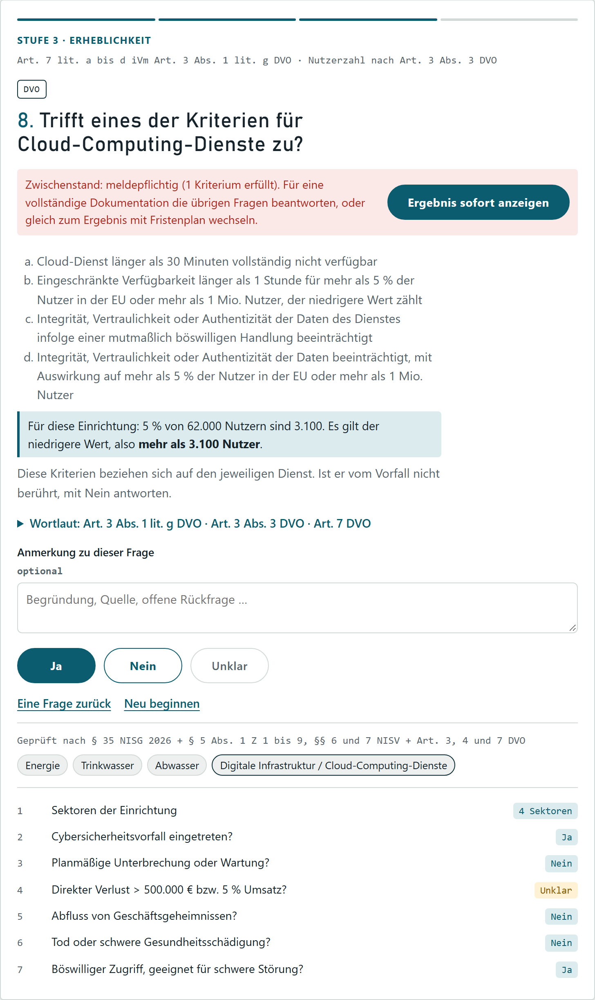
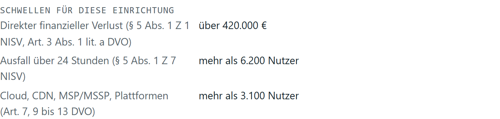
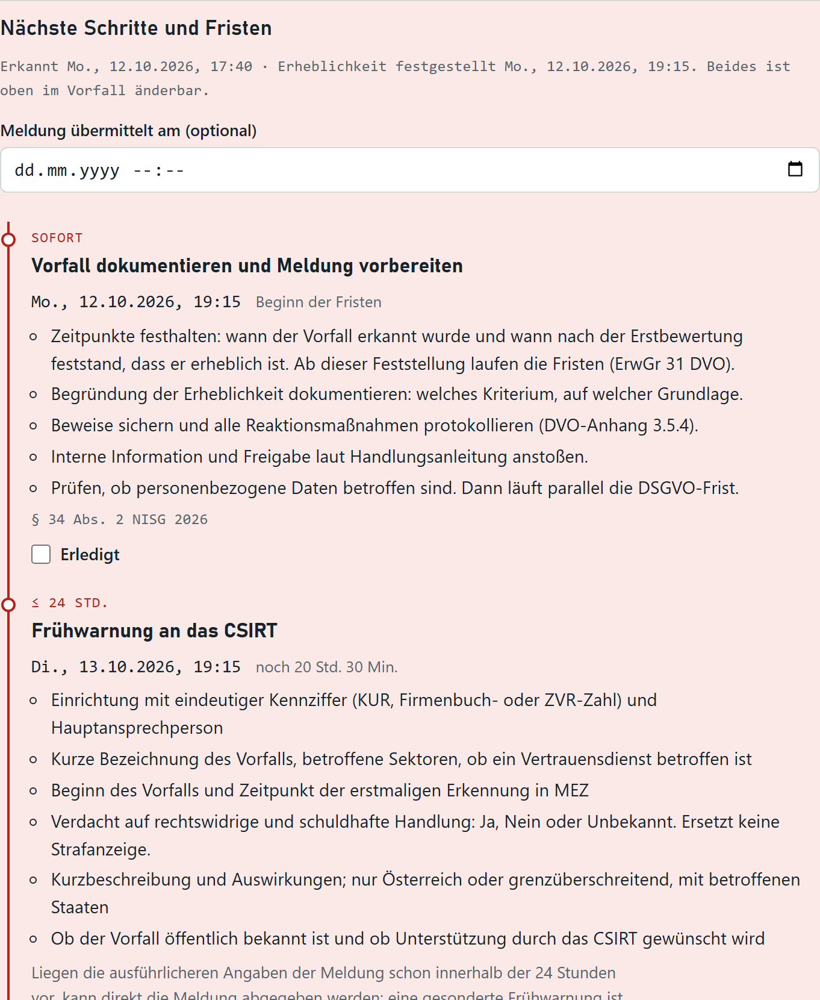
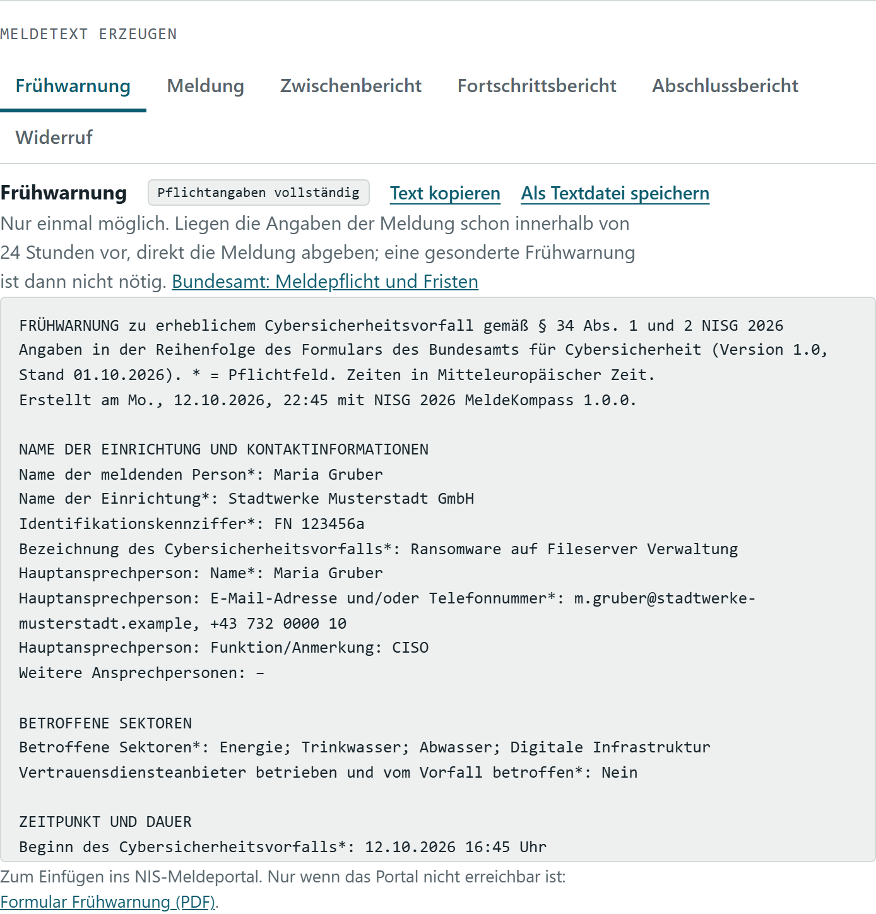
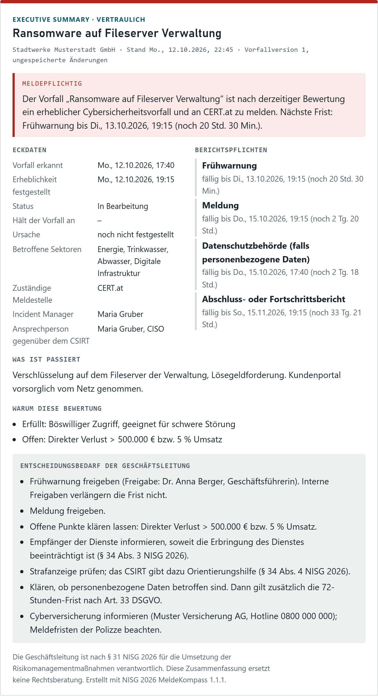
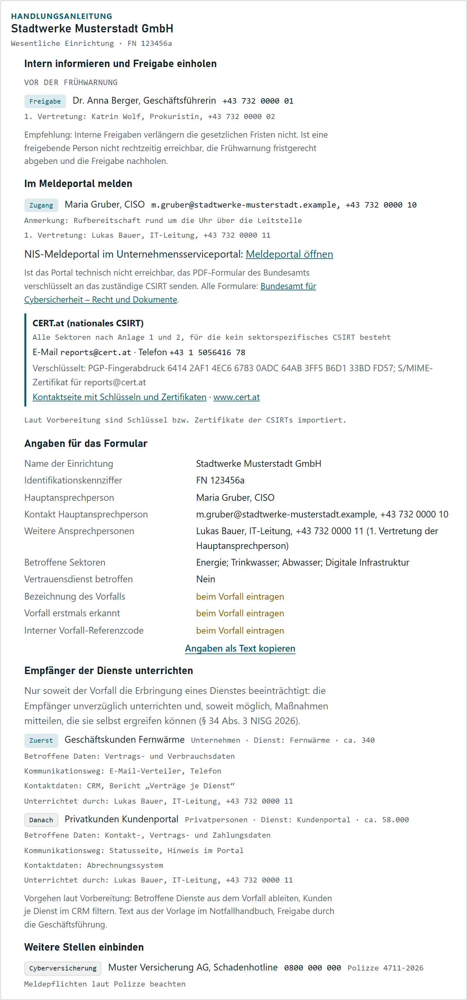
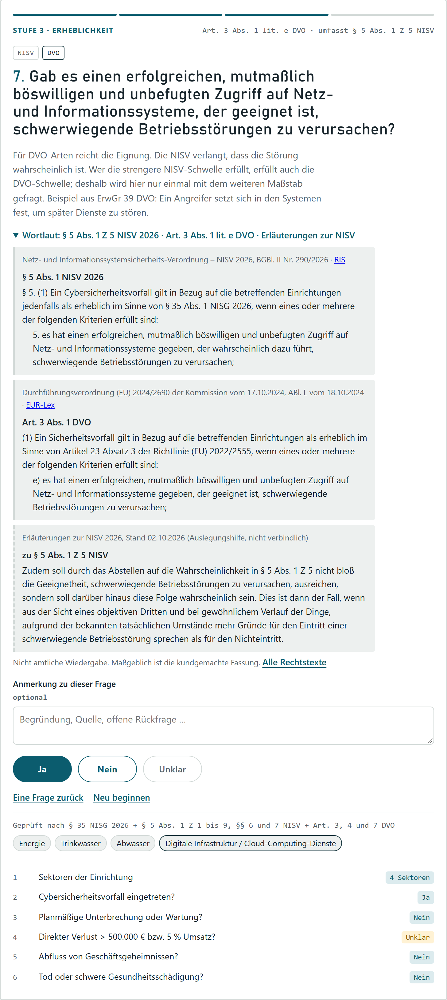
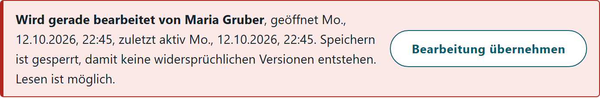
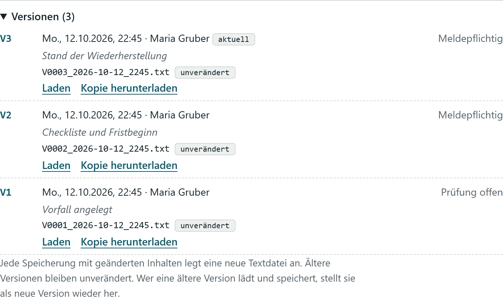

Meldepflichtig oder nicht? Der MeldeKompass prüft einen Cybersicherheitsvorfall Schritt für Schritt, rechnet die Fristen aus, erzeugt die Meldetexte und fasst die Lage für die Geschäftsleitung zusammen.

Diese Website und der NISG 2026 MeldeKompass sind kein Angebot einer Behörde und keine amtliche Information. Der MeldeKompass ist eine Orientierungshilfe. Er nimmt keine Meldungen entgegen und leitet keine weiter.
Erhebliche Cybersicherheitsvorfälle sind über die offiziellen Kanäle zu melden: über das NIS-Meldeportal im Unternehmensserviceportal an das zuständige CSIRT (§ 34 Abs. 1 NISG 2026). Maßgeblich sind die Rechtsvorschriften und die Angaben des Bundesamts für Cybersicherheit.
NIS-Meldeportal · Bundesamt für Cybersicherheit: Meldepflicht und Fristen
Sektoren, Kennzahlen, Zugänge zum Meldeportal, Freigaben und externe Stellen einmal hinterlegen. Daraus entsteht die Handlungsanleitung für den Ernstfall.
Die Checkliste führt durch alle Kriterien nach NISV und DVO. Jede Frage lässt sich auch mit „Unklar“ beantworten; offene Punkte werden am Ende gesammelt.
Fristenplan, Meldetexte, Executive Summary und Aktionsprotokoll. Jede Speicherung wird eine neue, unveränderliche Version.
Die Checkliste prüft nach § 35 NISG 2026, § 5 NISV 2026 und den Artikeln 3 bis 14 der DVO (EU) 2024/2690. Stadtwerke mit Energie, Wasser und Cloud-Diensten bekommen genau die Fragen, die für sie gelten.


„500.000 € oder 5 % des Vorjahresumsatzes, der niedrigere Wert zählt.“ Aus Umsatz und Nutzerzahl der Vorbereitung rechnet der MeldeKompass jede Schwelle für die eigene Einrichtung aus und zeigt sie direkt bei der Frage.
Erfasst werden zwei Zeitpunkte: wann der Vorfall erkannt wurde und wann feststand, dass er erheblich ist. Ab der Feststellung laufen die Fristen (ErwGr 31 DVO), bis dahin rechnet der Plan vorsichtig ab der Erkennung.


Aus den Meldeangaben im Vorfall entstehen Texte für Frühwarnung, Meldung, Zwischen-, Fortschritts- und Abschlussbericht sowie Widerruf. Einrichtung, Ansprechpersonen und Sektoren kommen aus der Vorbereitung. Fehlende Pflichtangaben sind markiert.
Bewertung, Eckdaten, Stand der Berichtspflichten, Auswirkungen und Maßnahmen. Dazu der Entscheidungsbedarf, abgeleitet aus dem Stand des Vorfalls: welche Freigabe fällig ist, ob Kunden zu informieren sind, ob die Cyberversicherung Bescheid wissen muss.
Zum Kopieren in eine E-Mail, als Textdatei oder gedruckt als PDF.


Aus der Vorbereitung wird im Ernstfall eine Anleitung: wer vor der Frühwarnung freigibt, wer Zugang zum Meldeportal hat, welche CSIRTs zuständig sind und wie man sie verschlüsselt erreicht. Lücken in der Vorbereitung zeigt der MeldeKompass an.
Jede Frage nennt die genaue Fundstelle, etwa § 5 Abs. 1 Z 5 NISV 2026 oder Art. 3 Abs. 1 lit. e DVO. Der Wortlaut aus NISG 2026, NISV 2026 und DVO (EU) 2024/2690 lässt sich bei der Frage aufklappen, getrennt nach Quelle. Auszüge aus den Erläuterungen zur NISV sind als Auslegungshilfe gekennzeichnet.

Jede Speicherung mit Änderungen ist eine neue Textdatei mit SHA-256-Prüfsumme. Nachträgliche Änderungen fallen auf.
Entscheidungen, Maßnahmen und Kommunikation mit Zeitpunkt und Person, zeitlich sortiert.
Auf einem Netzlaufwerk zeigt eine Bearbeitungssperre, wer einen Vorfall gerade geöffnet hat.
Für Planspiele: überall als Übung gekennzeichnet, im Ordner getrennt abgelegt.


Der MeldeKompass steht jeder Person und jeder Organisation kostenlos zur Verfügung, auch für die gewerbliche Nutzung. Die Datei darf unverändert und unentgeltlich weitergegeben werden. Die Nutzung erfolgt ohne Gewährleistung; das Werkzeug ist eine Orientierungshilfe und ersetzt keine Rechtsberatung.
Aktuelle Version 1.0.0 vom 10.10.2026
SHA-256 von NISG2026-MeldeKompass.html: f53016df5ac91e32cf21ba5d7dcfd6598f1de502f39e52feaf2e0004c6613297
Alle Versionen und Änderungen: GitHub
Rechtsstand: NISG 2026 in der Fassung vom 01.10.2026, NISV 2026, DVO (EU) 2024/2690, Meldeformulare des Bundesamts für Cybersicherheit (Stand 01.10.2026).
Der MeldeKompass wird von Thomas Eder entwickelt und gepflegt. Rückmeldungen und Fragen gerne per E-Mail:
Offenlegung nach § 25 Mediengesetz
Verantwortlicher: Thomas Eder, 4060 Leonding, Österreich, kontakt@nisg-meldekompass.at.
Diese Website setzt keine Cookies, verwendet weder Tracking noch Analyse, lädt keine Inhalte von Dritten und enthält keine Formulare.
Hosting: Die Website liegt bei GitHub Pages, einem Dienst der GitHub, Inc., 88 Colin P. Kelly Jr. St., San Francisco, CA 94107, USA. Beim Aufruf der Seite verarbeitet GitHub technisch notwendige Daten, insbesondere die IP-Adresse. GitHub protokolliert und speichert die IP-Adresse nach eigenen Angaben zu Sicherheitszwecken. Der Betreiber dieser Website hat auf diese Protokolle keinen Zugriff. Rechtsgrundlage ist das berechtigte Interesse an einer sicheren und zuverlässigen Bereitstellung der Website (Art. 6 Abs. 1 lit. f DSGVO). Dabei können Daten in die USA übermittelt werden. GitHub hält nach eigenen Angaben das EU-U.S. Data Privacy Framework ein und stützt Übermittlungen auf die Standardvertragsklauseln der Europäischen Kommission. Näheres in der Datenschutzerklärung von GitHub.
Download: Der Link „Kostenlos herunterladen“ führt zur Datei bei GitHub. Auch dabei verarbeitet GitHub die IP-Adresse wie beim Aufruf der Website.
Kontakt per E-Mail: Angaben aus einer E-Mail (Adresse, Inhalt der Nachricht) werden nur verwendet, um die Anfrage zu beantworten, und gelöscht, sobald sie dafür nicht mehr nötig sind. Rechtsgrundlage ist Art. 6 Abs. 1 lit. f DSGVO. Das Postfach wird über Google Workspace betrieben. Google verarbeitet die E-Mails dabei als Auftragsverarbeiter; die Daten können auch außerhalb der Europäischen Union verarbeitet werden. Näheres im Cloud Data Processing Addendum von Google.
Das Werkzeug läuft nach dem Herunterladen vollständig lokal im Browser. Es überträgt keine Daten an den Betreiber dieser Website oder an Dritte.
Rechte der betroffenen Personen: Auskunft, Berichtigung, Löschung, Einschränkung der Verarbeitung, Datenübertragbarkeit und Widerspruch (Art. 15 bis 21 DSGVO). Anfragen an die oben genannte Adresse. Beschwerden nimmt die Österreichische Datenschutzbehörde entgegen: Barichgasse 40–42, 1030 Wien, dsb.gv.at.
Stand: Oktober 2026